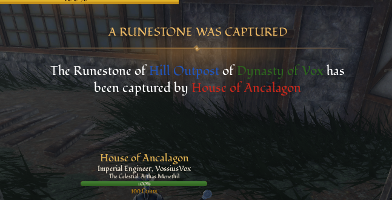
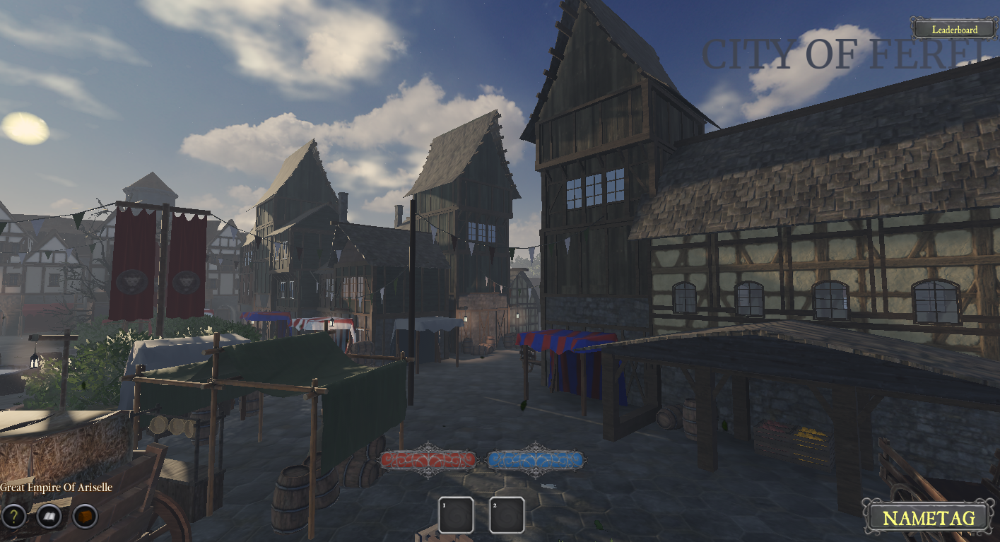

Race Customisation!
Posted on 17 November 2025

"Race Feature customisation is coming now, so Elves, Goblins, orcs and so on! will now be able to select multiple variants, have jewelry on ears, or horns, or whatever you desire too have on, this means there's 1 race item per face, you equip that, and pressing K, will pop up a GUI where you can select feature, they will be saved upon death, and possibly if im not too lazy, whenever you rejoin." - Voss
Behind the Scenes: Capture Points
Posted on 9 November 2025
In game now! Houses and Factions now have the ability to occupy a capture point, where it can be used to settle or teleport to whenever you please! You also have a very cool announcement portrayed on everyones screen each time a group occupies a point as well. "capture point yes" - Voss
Ariselle Expansion
Posted on 2 November 2025
With the Empire growing, we now have new infrastructure being built within the walls of Fereldon! Expect stables and shops to be opening there soon! (Credits to John for the image)